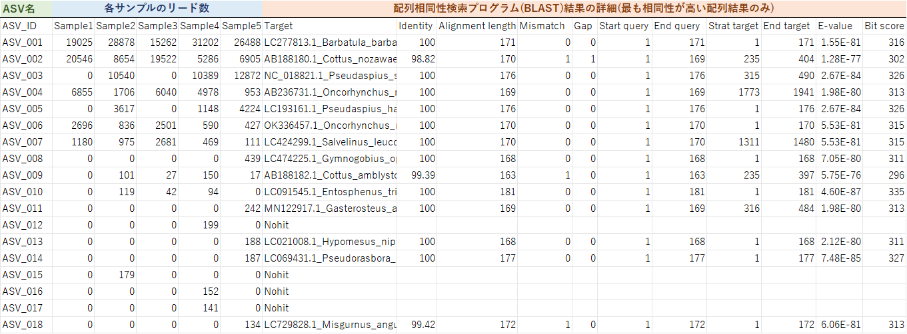
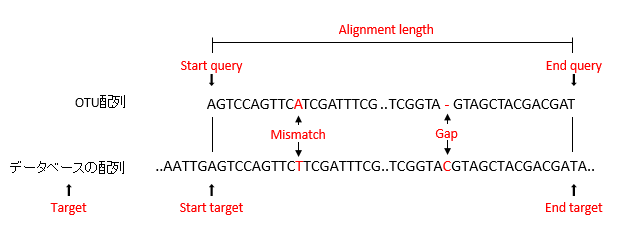
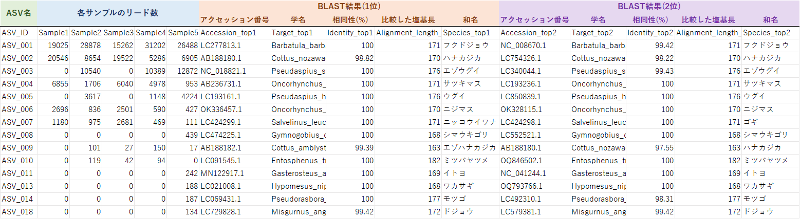

納品データにつきまして
納品させていただきました解析結果のデータについて、ご説明致します。
■ 1_生リード配列
- Sample.fastq.gz (※)
品質値付き塩基配列となります。詳細はこちらをご覧ください。
- experiment.tsv
サンプル調製方法およびラン条件に関する情報です。DDBJ-DRAへのデータ登録時、「Experiment」への入力に必須な情報です。
- md5sum.tsv
DDBJ-DRAへのデータ登録時、「Run」への入力に必須な情報です。md5値は、DDBJへデータ送信時にファイルが破損しているかどうかを確認するために必要な文字列です。
※DDBJ-DRAへのデータ登録を前提として、ファイルを圧縮（gz形式）しております。
解凍する場合は、以下の無償ソフト等にて解凍が可能でございます。
Lhaplus （ご所属機関にご確認の上、ご利用ください。）
http://www.vector.co.jp/soft/win95/util/se169348.html
DDBJ-DRAへの登録については、下記の弊社サイトをご参考にしていただければ幸いです。
http://gikenbio.com/dnaanalysis/ngs/ddbj/
解凍する場合は、以下の無償ソフト等にて解凍が可能でございます。
Lhaplus （ご所属機関にご確認の上、ご利用ください。）
http://www.vector.co.jp/soft/win95/util/se169348.html
DDBJ-DRAへの登録については、下記の弊社サイトをご参考にしていただければ幸いです。
http://gikenbio.com/dnaanalysis/ngs/ddbj/
■ 2_代表配列
- repset.fasta
：代表の配列になります(FASTA形式)。
- Sample.fasta
：サンプルごとに0.1%以上の出現頻度をもった代表配列です。
■ 3_代表配列のリード数と相同性解析結果.xlsx
各サンプルにおけるASV IDとリード数、推測される生物種の対応表となります。DNA配列相同性検索プログラム(BLASTN)を用いて、
各ASV配列とデータベース配列を比較し、配列相同性が最も高い生物種の配列情報を記載しております。
データ例
補足説明
※ ASV名の数字は、任意の数字であるため、特に意味はありません。
※ リード数が少ない(2桁以下)サンプルは、データの信頼度が低いです。
※ BLAST結果に[Nohit]と明記されているASVがありますが、弊社では対象生物群のみのデータベースを使用しているため、 非対象生物種(バクテリアなど)のデータである可能性があります。
※ 同じ配列相同性でも異なる生物種が推測されている場合があります。配列相同性が最も高い生物種の配列情報だけではなく、「5.相同性が高い生物種リスト」で下位の情報も合わせて、ご確認下さい。
BLAST結果の見方
データ例

サンプル１において、次世代シークエンサーで約4万配列(リード)を解析した結果、Barbatula barbatula (フクドジョウ)と推測されるASV_1の配列が約1.9万リード、Cottus nozawae (ハナカジカ)と推測されるASV_2の配列が約2万リード得られたことを示している。補足説明
※ ASV名の数字は、任意の数字であるため、特に意味はありません。
※ リード数が少ない(2桁以下)サンプルは、データの信頼度が低いです。
※ BLAST結果に[Nohit]と明記されているASVがありますが、弊社では対象生物群のみのデータベースを使用しているため、 非対象生物種(バクテリアなど)のデータである可能性があります。
※ 同じ配列相同性でも異なる生物種が推測されている場合があります。配列相同性が最も高い生物種の配列情報だけではなく、「5.相同性が高い生物種リスト」で下位の情報も合わせて、ご確認下さい。
BLAST結果の見方

| 語句 | 説明 |
|---|---|
| Target | データベースと一致した配列名(種名) |
| Identity | ASV配列とデータベース配列の一致した塩基の割合[%] |
| Alinment length | 比較した塩基長[bp] |
| Mismatch | ASV配列とデータベース配列で異なっていた塩基数[bp] |
| Gap | ASV配列とデータベース配列で挿入/欠失していた塩基数[bp] |
| Start query | ASV配列において比較を開始した塩基数[塩基目] |
| End query | ASV配列において比較を終了した塩基数[塩基目] |
| Start target | データベース配列において比較を開始した塩基数[塩基目] |
| End target | データベース配列において比較を終了した塩基数[塩基目] |
| E-value | 偶然そのような配列の一致が起こる期待値（＝ゼロに近いほど、配列の相同性が高い） |
| Bit score | アライメントの質を表す値。高いほど、良いアライメントをしている。 |
■ 4_相同性が高い生物種リスト(BLAST結果10位まで).xlsx
97%以上の相同性を示したASVのリード数と推測された生物種の対応表となります。相同性の高かった生物種を1位から10位まで記載しています。
データ例
ASV_7は、BLASTの結果の1位にニッコウイワナ、2位にゴギと推測されています。 いずれもIdentityやAlinment lengthは同じ結果であるため、これらの種(亜種の関係にある生物種)を塩基配列から区別することができません。 捕獲調査などの結果と合わせて、どの生物種が生息するのかご判断下さい。
補足説明
※E-valueが低い順に順位を付けています。
※Identityが低い結果やAlinment lengthが他のデータより短い結果は、信頼度が低いです。
※データベース内に同じ生物種の配列が複数登録されているため、同様の結果が複数回得られる場合があります。
※異なるASVで同じ生物種が推測されている場合は、種内多型やPCR・塩基配列決定のエラーが原因でASVが分かれている
と考えられます。
※定量性について、同サンプル内で異なる生物種由来のリード数を比較することはできますが、サンプル間では総リード数
やPCRの増幅効率が異なるため、リード数の比較はできません。
■ 5_中間ファイル
各解析から出力されたqzaとqzv形式データが含まれています。これらのデータは、お客様や弊社で再度Qiime2解析する際にご必要になります。 また、弊社ではQiime2から出力されたASV配列名をconvert.txtの対応表に従い、変更しております。
株式会社 生物技研
Tel：042-780-8333 Fax：042-780-8334
E-mail：dna@gikenbio.com
Tel：042-780-8333 Fax：042-780-8334
E-mail：dna@gikenbio.com